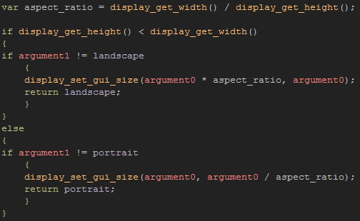
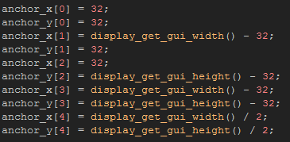
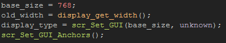
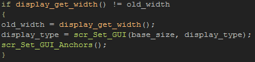

Tutorial
Page 10 of 15
"Floating" HUD Elements
To get around the fact that the device display can have different resolutions and dpi, as well as the fact that it can be rotated from landscape to horizontal (and vice versa) we are going to make a "floating" HUD.
This is a HUD for our game that will be comprised of different parts which we will then anchor to different parts of the screen relative to the display height and width.
The first thing that are going to do is define some constants to use as a check for the display orientation. To create a constant, select the Resources menu from the main GameMaker:Studio
screen, then go down to the bottom and click the entry marked "Constants". This will open a new window where you should define the following constants:

The "unknown" constant will be used at the very start of the game to initialise the GUI script that we are going to write, and will force the choice of the initial aspect ratio and scale for our game. After that we
will only need to check for either "landscape" or portrait".
Now that you have done that, create a new script asset and call it scr_Set_GUI, and in it place the following code:

What this script is going to do is set the GUI layer (this is the layer where the Draw GUI Event draws to) scale to a minimum value, with the width (or height) scaling proportionally based on that
value and the screen aspect ratio. The script returns the constant that we defined to tell us which orientation the device is in and this will then be checked and re-used when we call this script again.
The benefit of this approach is that you can design your HUD elements around this base size, and also adapt their position based on whether the device is in landscape or portrait mode. But to do this, we also need to
define the "anchor points" for the HUD. These "anchor points" are the coordinates within the GUI where we are going to draw the individual HUD elements, and again we will create a script to set these.
Create another new script asset and call it scr_GUI_Set_Anchors, then add this code into it:

Now, this is just an example of the code that you could have... However, individual games will need different solutions for positioning, but you can check to see which constant is being used for the
display type (landscape or portrait) and adjust things accordingly. Note that all coordinates are set relative to the GUI width and height, so that no matter what the final size of the GUI layer, they will
still appear in the correct place.
Before continuing, we have to call this script after the previously created one so that the GUI layer size is set first, and then the anchor points are re-calculated, so open the the Create Event again, and
at the end call the anchor script.
The final touch for this page of the tutorial is to set up the object that is going to control the HUD for us, so open the object obj_Devices_HUD_Dpi_Scale and add a Create Event with the
following:

This code initialises some variables and then calls our scripts. Note that here is where we use the "unknown" constant, as if we set the display type controller variable to "portrait" or "landscape", then, if the device
is in the orientation selected, the script we have created will not calculate the GUI layer size correctly and we will have wrong values for the anchor points and aspect ratios.
Now add a Step Event with this code:

This simply checks the value of the display width against that which we stored in the create event, and if it is different then obviously the orientation has changed and we need to reset the GUI size and anchor points.
Un-comment the pre-prepared code that is in the draw event now, and move the "Device" rooms up to the top of the room asset list in the GameMaker:Studio resource tree then run the game on your
chosen device. Switch the orientation of the device and note that the red circles are perfectly round (not ellipses, which would indicate an incorrect aspect ratio) and positioned one in each corner and one in the
center of the screen.
You will also see that the game itself is stretched to fit the display size, such that in portrait mode it looks "okay" but in landscape mode it looks squashed and horrible. The next part of
this tutorial will deal with this problem, but before continuing, try changing the draw event to include sprites and experiment with different placements for each of the possible orientations, as well as different
sizes for the minimum GUI width/height.
Click on the Next button to go to the next page of the tutorial.